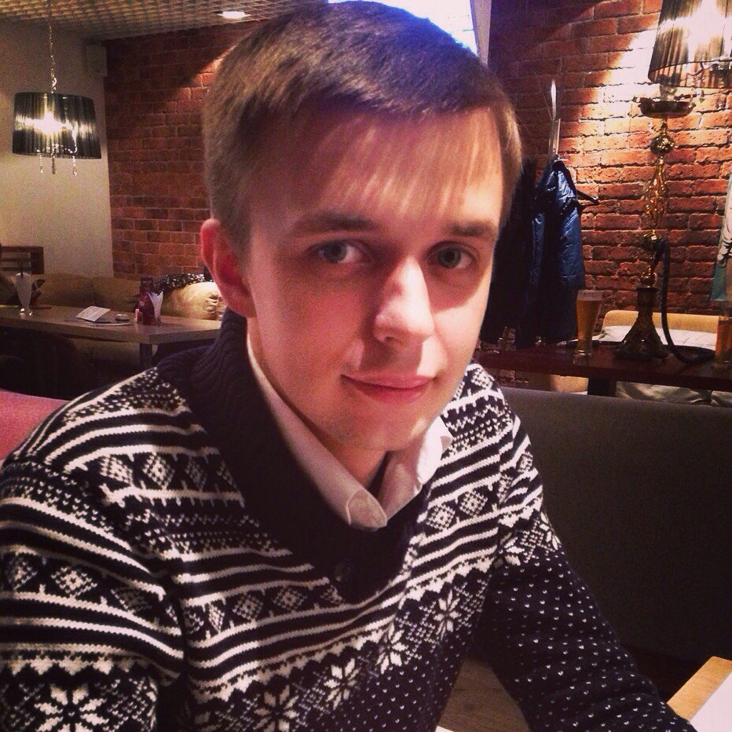

Меня зовут Ковалев Антон Игоревич. Я родился в городе Петрозаводске Республики Карелия 23 февраля 1992 года, в семье, где папа инженер-механик, мама домохозяйка. Рос со старшей сестрой. Мое детство проходило весело и беззаботно. До трех лет сидел дома, а потом меня отдали в детский сад, где я получил азы социализации. Свои школьные годы я вспоминаю с большой радостью. Я посещал две секции – танцы и баскетбол. После окончания школы поступил в Петрозаводский Государственный Университет на специальность «Математика», где провел интересные пять лет. После окончания университета пошел в ВС РФ. Служил связистом. По возвращению устроился на работу учителем математики и информатики.

Terveh!
Ковалев Антон Игоревич
Обо мне
Образование
- 1999–2010 – МОУ Лицей №1, г.Петрозаводск
- 2010–2015 – Петрозаводский Государственный Университет, специальность «Математика»
Опыт работы
- 2012–2015 – ВТБ24 (ПАО), системный администратор
- 2017–по н.в. – МБОУ Калевальская СОШ им. В.А.Кириллова, учитель математики и информатики
Хобби
- Математика
- Программирование
- Баскетбол
Как я становился разработчиком
- 03.12.2019 – Приступил к изучению модуля HTML
- 04.12.2019 – Окончил модуль HTML
- 05.12.2019 – Приступил к выполнению первого проекта